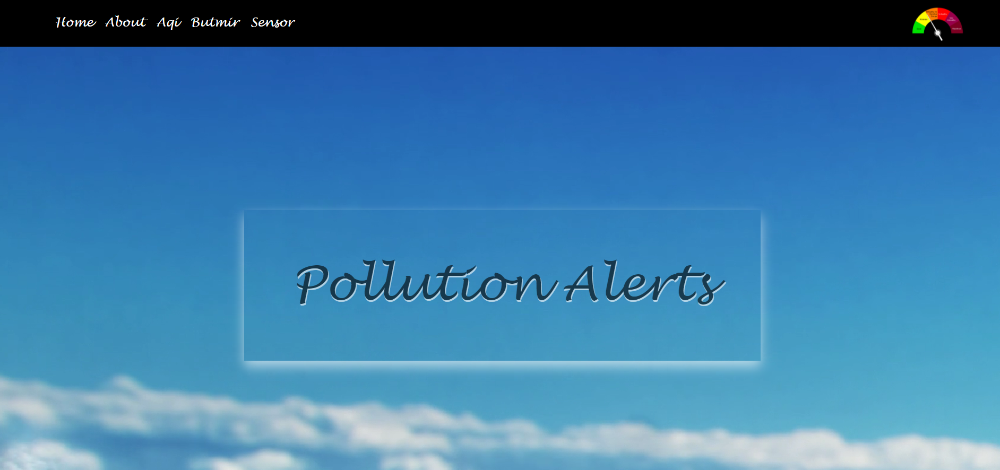
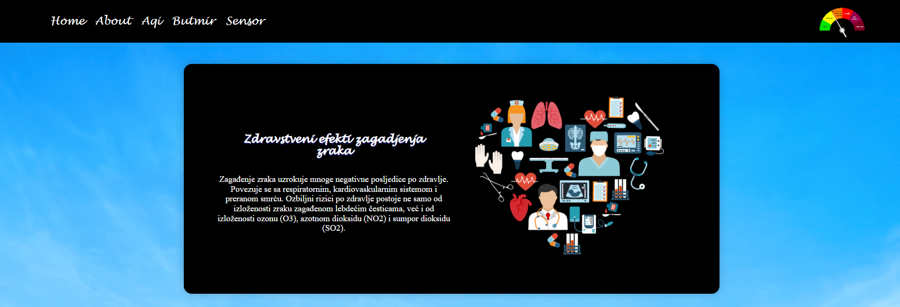
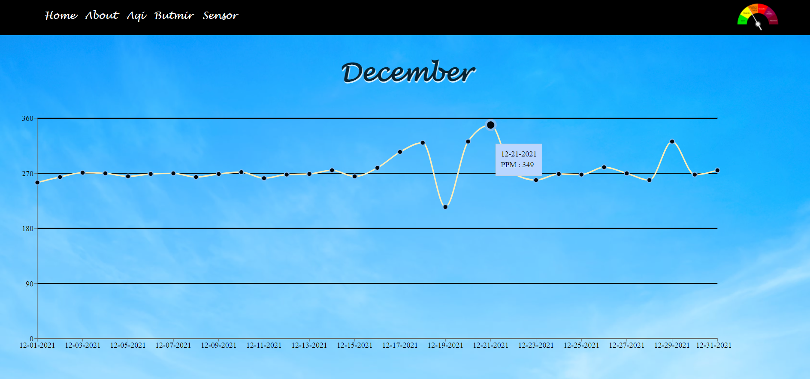
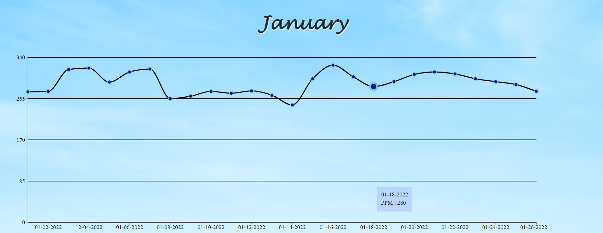

Home
Korisnik prilikom pokretanja web aplikacije vidi Navbar koja se sastoji od elemenata (stranica):
- Home
- About
- Aqi
- Butmir
- Sensor
- Logo
Na početnoj se nalazi video sa nazivom aplikacije Air Monitoring Quality

About
Ova stranica sadrži kartice sa nekim informacijama o efektima zagađenja zraka. Korisnici mogu da vide 3 crne kartice sa tekstom i slikama.



Aqi
Na ovoj stranici korisnici imaju opciju da pretražuju kvalitet zraka za određenu državu.
U polje gdje piše Enter the name of the country korisnik unosi željenu državu. Unosom prvog slova, aplikacija izbaci spisak ponuđenih država koje sadrže to slovo.

Kada izabere državu, korisnik klikne na Search , i tada mu aplikacija izbaci tabelu sa podacima za tu državu.
Ukoliko nema podataka za tu odabranu državu, aplikacija izbaci upozorenje No data for this country. Please choose other.
Kada korisnik pomjeri miš na ikonicu i može vidjeti značenje datih skraćenica.

Butmir
Ova stranica sadrži lokaciju senzora koji prati CO2 . Mapa je povezana putem mapbox-a.

Sensor
Ova stranica sadrži grafike koji prikazuju podatke koje je senzor sakupio za mjesece decembar i januar.
Povlačenjem miša na neki od čvorova, izbaci se kartica sa datumom i vrijednosti CO2 .

